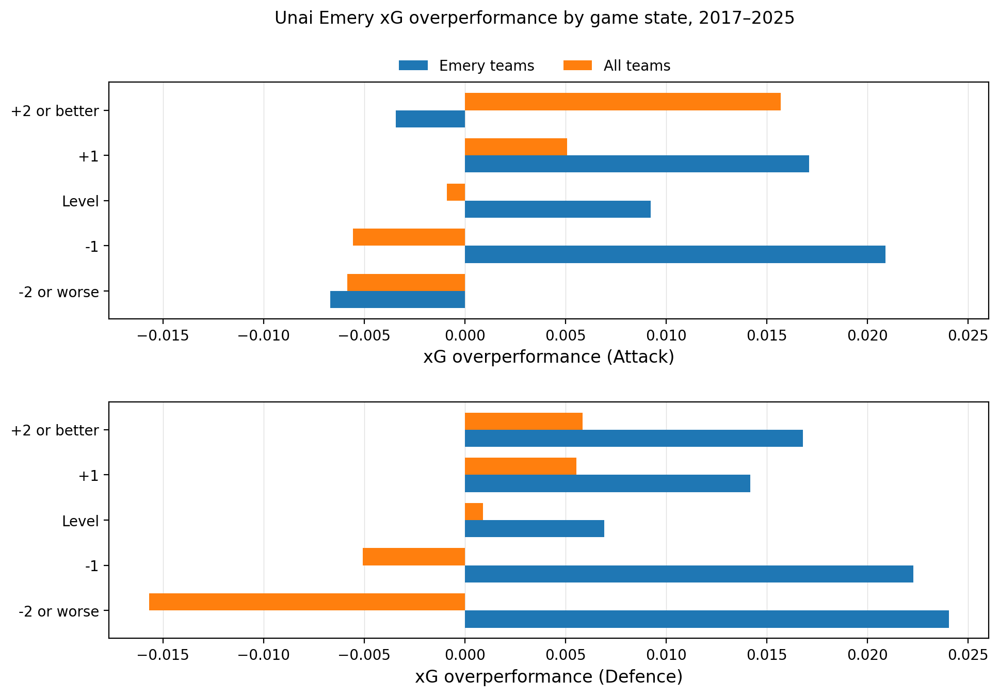
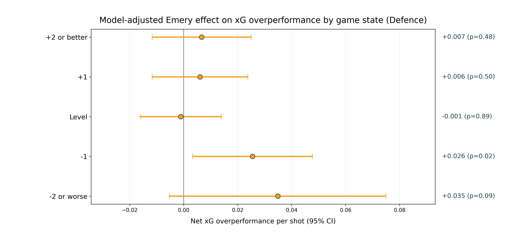

| Unai Emery xG overperformance by club relative to other managers (2017-2025) | ||||
| Club | Matches (Emery) | xG overperformance per match (Emery) | Matches (Other) | xG overperformance per match (Other) |
|---|---|---|---|---|
| Paris Saint-Germain | 46 | 0.624 | 323 | 0.309 |
| Arsenal | 71 | 0.300 | 316 | 0.201 |
| Aston Villa | 125 | 0.254 | 127 | 0.015 |
| Villarreal | 117 | 0.202 | 249 | 0.027 |
| xG overperformance = goals − expected goals. | ||||
Unai Emery: the xG whisperer
football
statistics
Unai Emery
Aston Villa
Premier League
Part two: Breaking down Emery by club, and looking at forwards, keepers, and game state.
This is part two of a multi-part look at Unai Emery and his apparent habit of outperforming expected goals (xG). In part one, I showed that xG is a more predictive statistic than points or goal difference, and that Emery ranks third among all managers for xG overperformance during the study period (2017-2018 to 2024-2025).
Next, I want to drill down on Emery’s stints at PSG, Arsenal, Villarreal and Aston Villa during those seasons. We know that his teams, cumulatively, have scored more than their expected goals for, and conceded fewer than their expected goals against. But where have these gains come from?
An obvious starting point is to break it down by club. Here we can see a breakdown of Emery’s xG overperformance per game with each of the four clubs, with attacking overperformance in blue and defensive overperformance in orange.
 Emery has outperformed xG at all of his last four clubs, on both the attacking and defensive ends of the pitch.
Emery has outperformed xG at all of his last four clubs, on both the attacking and defensive ends of the pitch.
All four clubs, with Emery as manager, have performed better than xG in both attack and defence. And there’s an obvious point to be made, especially with respect to PSG and Arsenal: is this just about having better players? These are wealthy clubs that can sign better-than-average footballers in every position; it’s no wonder that they will excel at whatever minutiae the xG models cannot capture.
This is fair, so let’s take a look at how these clubs have performed, relative to xG, with and without Unai Emery as manager during the study period:
Again, I want to reiterate that this is a measure of goals relative to xG - it does NOT measure whether the xG is high or low in the first place. But it is clear that Emery has done better, relative to xG, at each of the four clubs than all the other managers collectively. PSG and Arsenal have outperformed xG across all managers, whereas Aston Villa and Villarreal are close to neutral under non-Emery managers, backing up the hypothesis that wealth -> talent -> xG overperformance.
So if we suspect star players may be driving some of the ‘Emery effect’, let’s take a look at the goalscorers who have exceeded their xG by the most while playing for Emery teams between 2017 and 2025:
| Top xG overperformers under Unai Emery (2017-2025) | ||||||
| Player | Shots (Emery) | Total xG overperformance (Emery) | per shot (Emery) | Shots (Other) | Total xG overperformance (Other) | per shot (Other) |
|---|---|---|---|---|---|---|
| Jhon Durán | 92 | 6.49 | 0.071 | NA | NA | NA |
| Alex Baena | 37 | 6.31 | 0.171 | 202 | −6.45 | −0.032 |
| Edinson Cavani | 132 | 6.26 | 0.047 | 201 | −1.45 | −0.007 |
| Neymar | 118 | 5.52 | 0.047 | 392 | 4.76 | 0.012 |
| Gerard Moreno | 206 | 4.58 | 0.022 | 424 | −4.69 | −0.011 |
| Yeremi Pino | 58 | 3.92 | 0.068 | 86 | −6.18 | −0.072 |
| Alexandre Lacazette | 124 | 3.76 | 0.030 | 481 | 6.83 | 0.014 |
| Morgan Rogers | 97 | 3.64 | 0.038 | NA | NA | NA |
| Ollie Watkins | 288 | 3.52 | 0.012 | 201 | −3.87 | −0.019 |
| Mesut Özil | 17 | 3.36 | 0.198 | 57 | −0.12 | −0.002 |
| xG overperformance = goals − expected goals. | ||||||
There are some familiar names on the list, but only Neymar and Lacazette were able to sustain their finishing prowess under different managers. Edinson Cavani underperformed his xG in subsequent seasons with PSG, Man Utd and Valencia. Ollie Watkins has established himself as a star striker at Emery’s Villa, but had previously been seen as a hard worker but poor finisher. Alex Baena, meanwhile, experienced an outrageous run of finishing in his short time playing for Emery’s Villarreal, scoring 9 times from only 37 shots and gaining 6.31 goals; yet without Emery, his shooting boots deserted him, completely negating the hot run (-6.45 goals). Yeremi Pino, now of Crystal Palace, experience a similar turnaround (+3.92 to -6.18).
The defensive end of the pitch is a bit harder to measure directly, but we can take a look at goalkeepers. Post-shot expected goals (PSxG) models the probability of a goal being scored after the ball is struck (an off-target shot therefore being worth zero) and we can look at a goalkeeper’s “goals prevented” by subtracting the actual number of goals conceded from their total PSxG.
| Goalkeepers under Unai Emery (2017-2025) | ||||||
| Goalkeeper | Matches (Emery) | Goals prevented (Emery) | per match (Emery) | Matches (Other) | Goals prevented (Other) | per match (Other) |
|---|---|---|---|---|---|---|
| Emiliano Martínez | 121 | 8.9 | 0.074 | 102 | −3.4 | −0.033 |
| Bernd Leno | 48 | 2.7 | 0.056 | 213 | −12.3 | −0.058 |
| Alphonse Areola | 42 | 1.2 | 0.029 | 157 | −3.8 | −0.024 |
| Petr Čech | 18 | 0.0 | 0.000 | 37 | −1.8 | −0.049 |
| Gerónimo Rulli | 70 | −1.4 | −0.020 | 125 | −10.0 | −0.080 |
| Sergio Asenjo | 43 | −3.8 | −0.088 | 101 | −2.3 | −0.023 |
| Robin Olsen | 14 | −4.7 | −0.336 | 65 | −5.6 | −0.086 |
| Goals prevented = PSxG − goals against. Minumum 5 matches played under Emery. | ||||||
Discuss the results.
 Emery’s attacking overperformance comes predominantly in close games. Defensively, he outperforms xG in all game states.
Mixed effects regression model.
 After adjusting for team strengths, Emery’s xG overperformance in attack is most prominent when trailing by one goal.
After adjusting for team strengths, Emery’s xG overperformance in attack is most prominent when trailing by one goal.
 In defence, Emery’s teams overperform xG when trailing by all scorelines.
Mention Emery points compared to his GD, and the number of one-goal wins this season. Is this a thing?
| Most one-goal wins, 2025-2026 Premier League | |||
| Team | Played | One-goal wins | Total wins |
|---|---|---|---|
| Aston Villa | 21 | 10 | 13 |
| Arsenal | 21 | 8 | 15 |
| Fulham | 21 | 7 | 9 |
| Liverpool | 21 | 6 | 10 |
| Newcastle United | 21 | 5 | 9 |
| Manchester United | 21 | 5 | 8 |
| Sunderland | 21 | 5 | 7 |
| Manchester City | 21 | 4 | 13 |
| Everton | 21 | 4 | 8 |
| Crystal Palace | 21 | 4 | 7 |
| AFC Bournemouth | 21 | 4 | 6 |
| Brighton & Hove Albion | 21 | 3 | 7 |
| Brentford | 21 | 2 | 10 |
| Chelsea | 21 | 2 | 8 |
| Tottenham Hotspur | 21 | 2 | 7 |
| Nottingham Forest | 21 | 2 | 6 |
| Leeds United | 21 | 2 | 5 |
| Burnley | 21 | 1 | 3 |
| West Ham United | 21 | 1 | 3 |
| Wolverhampton Wanderers | 21 | 0 | 1 |
GD to PPG model (linear).
scatterplot
Emery versus predicted points.
emery stints csv
Emery scoreline distribution.
column charts
Conclusion: Exceeding xG yes, exceeding GD no. Players, maybe. Introduce next part: How predictive is this? Build a model respecting chronology, and validate by using it to predict xG overperformance this season.